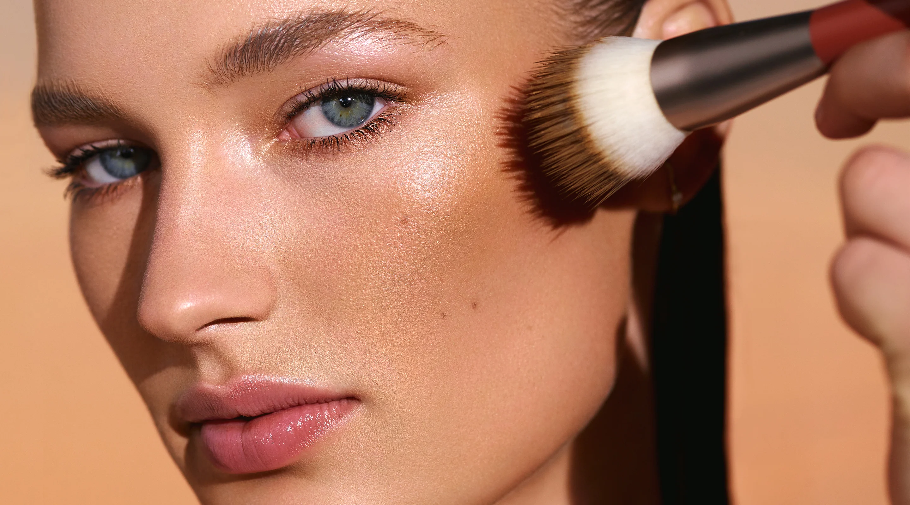

Il bronzer, o anche terra abbronzante, è un cosmetico generalmente dalla texture in polvere libera o compatta che ha lo scopo di scaldare l’incarnato. Scaldare, però, non vuol dire “diventare marroni”! La scelta del colore del bronzer dovrebbe ricadere su una nuance di 1 o 2 toni più scura dell’incarnato naturale. Inoltre, a seconda dell’effetto che si vuole ottenere, il bronzer può essere scelto in versione shimmer oppure matte.
